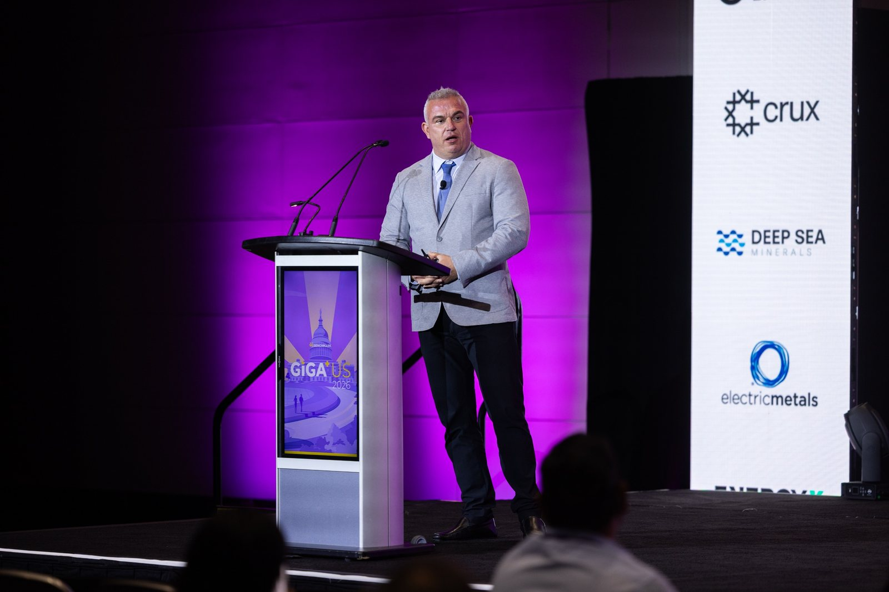
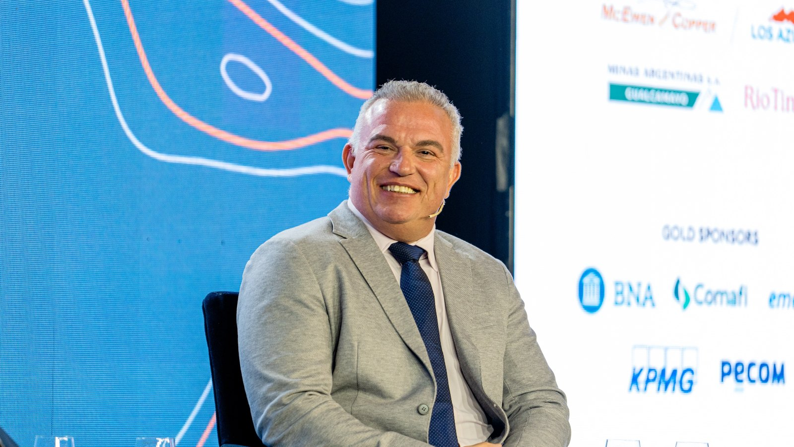

| 年 | 日付 | 都市 | イベント | 役割 |
|---|---|---|---|---|
| 2026 | 10月28日〜30日 | ブエノスアイレス／メンドーサ | 5th Argentina Critical Minerals Summit 予定 | 登壇確定 |
| 2026 | 9月23日 | ビーバークリーク | Precious Metals Summit | Investing News Networkによるインタビュー |
| 2026 | 9月 | ブエノスアイレス | X Foro PYMES Italia–América Latina | 「Minerales críticos y desarrollo federal」（重要鉱物と連邦の発展）、サン・フアン、フフイ、カタマルカ各州の知事とともに登壇 |
| 2026 | 9月 | アルゼンチン | Forbes Mining Summit | 「En Foco」、フェルナンド・エレディア氏とともに登壇 |
| 2026 | サンティアゴ（チリ） | Argentine Embassy in Chile | 「Perspectivas de la Minería en la Región」（地域における鉱業の展望）、両国の鉱業当局者とともに登壇 | |
| 2026 | 8月 | ブエノスアイレス | LA NACION, Minería | ホセ・デル・リオ氏との対談 |
| 2026 | ブエノスアイレス | S&P Global, Argentina Market Briefing | 銅需要に関するハイレベル対話 | |
| 2026 | 6月9日 | ワシントンD.C. | Benchmark Giga US 26 | 銅セッション基調講演：マッキュアン・カッパー |
| 2026 | 6月4日 | トロント | McEwen Annual Meeting | The Northern Miner司会によるBullpen Q&A |
| 2026 | 5月6日〜8日 | サン・フアン | Expo San Juan Minera · Argentina Cobre Sessions | 会議議長、基調講演、サンティアゴ・スパルトロ氏との対談 |
| 2026 | 4月 | サンティアゴ（チリ） | CESCO Week | 鉱業地区と新たな地質学的魅力 |
| 2026 | 4月7日 | ブエノスアイレス（オンライン） | Atlantic Council | アルゼンチン鉱業セクターの潜在力を生かす |
| 2026 | 3月 | ブエノスアイレス | IEFA LatAm Forum | オンタリオ州経済開発相を交えた銅パネル |
| 2026 | 3月1日 | トロント | PDAC · Argentina Mining Day | ロス・アスレスの紹介、GEMERAによる探鉱の展望 |
| 2025 | 12月 | ブエノスアイレス | Argentina: Oro, Plata y Cobre | アルゼンチン鉱業における探鉱の現状 |
| 2025 | 11月12日 | ブエノスアイレス | 4th LATAM & Argentina Critical Minerals Summit | ロス・アスレスの紹介 |
| 2025 | 10月31日 | メンドーサ | Argentina Mining Cuyo | GEMERA会長として探鉱パネルに登壇 |
| 2025 | 10月 | ロンドン | Benchmark Mineral Intelligence · LME Week | ロブ・マッキュアン氏とともにロス・アスレスを紹介 |
| 2025 | 10月 | ロンドン | LME Metals Seminar | ロス・アスレスの紹介 |
| 2025 | 10月 | ストックホルム | Nordic Funds & Mines | ロブ・マッキュアン氏とともに講演 |
| 2025 | 10月1日 | ケルン | 76. Lateinamerika-Tag | スマートマイニング、スマートパートナーシップ：アンデスにおける次代の鉱業に向けたドイツのソリューション |
| 2025 | 9月 | アルゼンチン | Ámbito Debate | 「La nueva era del cobre」（銅の新時代）パネル |
| 2025 | 9月 | ビーバークリーク | Precious Metals Summit | ロブ・マッキュアン氏とともに投資家向けプレゼンテーション |
| 2025 | 8月 | メンドーサ | UN Global Compact Argentina, Federal Tour | 持続可能なビジネスリーダーシップに関するパネル |
| 2025 | 8月4日〜5日 | サン・フアン | Argentina Cobre 2025 | 名誉会長。5州の知事が出席した開会セッション |
| 2025 | 7月 | ボカラトン | Rule Symposium | ロブ・マッキュアン氏とともにロス・アスレスを紹介 |
| 2025 | 5月20日 | ブエノスアイレス | ArMinera · IDEA and CAEM | 鉱業の競争力を高める技術、イノベーション、人材 |
| 2025 | 5月 | アルゼンチン | Forbes Mining Summit | 銅、飛躍の時 |
| 2025 | 4月8日 | ミュンヘン | bauma | ロス・アスレス：新時代のアルゼンチンにおけるスマートマイニングとグリーン銅 |
| 2025 | 3月2日 | トロント | PDAC · Argentina Mining | ロス・アスレスの紹介 |
| 2024 | 12月10日〜11日 | ブリュッセル | EU Raw Materials Week | 主要講演者。欧州投資銀行（EIB）、米州開発銀行（IDB）、KfW IPEXとの個別会談 |
| 2024 | 12月4日〜5日 | ブエノスアイレス | Argentina: Oro, Plata y Cobre | 2024年の総括と今後に関するパネル。GEMERA会長として探鉱指標を報告 |
| 2024 | 11月 | アルゼンチン | Ámbito Debate · Cita de CEOs | CEOパネル |
| 2024 | 11月 | チューリヒ | Precious Metals Summit | ロブ・マッキュアン氏とともに投資家向けプレゼンテーション |
| 2024 | 11月 | ハンブルク | 75. Lateinamerika-Tag | ロス・アスレスの紹介、重要鉱物サプライチェーンに関する円卓会議 |
| 2024 | 10月29日 | ブエノスアイレス | Argentine Investment Forum | パネル「Infrastructure for Growth: Energy, Logistics & Mining」（成長のためのインフラ：エネルギー、物流、鉱業） |
| 2024 | 10月 | サン・フアン | Fundación Pensar, regional meeting | サン・フアン、メンドーサ、フフイ各州の知事が聴講した鉱業パネル |
| 2024 | 10月9日 | ニューヨーク | Benchmark World Tour, hosted by Bloomberg Intelligence | パネル「Mining the Energy Transition」（エネルギー転換を支える鉱業）、ロス・アスレスの紹介 |
| 2024 | 10月 | トロント | RBC Copper Developer Summit | ロブ・マッキュアン氏とともに登壇 |
| 2024 | 9月10日 | ビーバークリーク | Precious Metals Summit | ロブ・マッキュアン氏とともに投資家向けプレゼンテーション30回 |
| 2024 | 9月9日 | ニューヨーク | H.C. Wainwright Global Investment Conference | 投資家向けプレゼンテーション |
| 2024 | 9月4日 | ニューヨーク | Jefferies Global Metals & Mining Conference | 投資家向けプレゼンテーション |
| 2024 | 8月 | アルゼンチン | Forbes Minería Summit | フェルナンド・エレディア氏とともに登壇 |
| 2024 | 7月3日 | アルゼンチン | CAI and the Argentine Investment Agency | 「Grandes proyectos de inversión que transforman la Argentina」（アルゼンチンを変える大型投資プロジェクト） |
| 2024 | 5月 | サン・フアン | Argentina Cobre, first edition | カナダ大使とともに国際銅会議の共同議長を務め、民間セクターのパネルに登壇 |
| 2024 | 3月3日 | トロント | PDAC · Argentine Day | マッキュアン・カッパーの紹介 |
| 2024 | 1月 | ベルリン | Unlocking Synergies, Argentina–Germany | アルゼンチン大使館で民間セクター代表として講演 |
| 2023 | 11月14日 | チューリヒ | Precious Metals Summit | ロブ・マッキュアン氏とともに投資家向けプレゼンテーション |
| 2023 | 9月 | アルゼンチン | IADEM | エネルギー転換と持続可能性 |
| 2023 | 9月12日〜15日 | ビーバークリーク | Precious Metals Summit | ロブ・マッキュアン氏とともに投資家向けプレゼンテーション |
| 2023 | 5月23日 | ブエノスアイレス | ArMinera | ロス・アスレスの紹介 |
| 2023 | 3月7日 | トロント | PDAC · Argentina Mining | 「Los Azules, Portal for Copper Development in San Juan」（サン・フアンの銅開発の玄関口、ロス・アスレス）、ロブ・マッキュアン氏とともに登壇 |
| 2022 | 12月15日〜16日 | アルゼンチン | Argentina: Oro, Plata y Cobre | 持続可能性と社会とのコミュニケーションに関するパネル、ロス・アスレスの紹介 |
| 2022 | 10月 | サン・フアン | Expo San Juan Minera | San Juan Tierra Mineraセミナー：ロス・アスレスの進捗 |
| 2022 | 9月13日〜16日 | ビーバークリーク | Precious Metals Summit | ロブ・マッキュアン氏とともに25回以上の投資家向けプレゼンテーション |
| 2022 | 7月7日 | オンライン | McEwen Mining Annual Meeting | ロス・アスレスの紹介 |
| 2022 | 6月22日 | ロンドン | Hannam & Partners, Future Copper Giants | マッキュアン・カッパーとロス・アスレス |
| 2022 | 6月 | カナダ | MSTA Canada | マッキュアン・カッパーとロス・アスレス |
出典
- 1McEwen Inc.. Management team: Michael Meding, Managing Director, McEwen Copper. 2026. www.mcewenmining.com
- 2GlobeNewswire. McEwen Copper Announces Management Addition. 2022-02-17. www.globenewswire.com
- 3EconoJournal. Michael Meding, nuevo presidente de Gemera. 2024-10-07. econojournal.com.ar
- 4LinkedIn, Los Azules. Los Azules en Expo San Juan Minera 2026. 2026-05-07. www.linkedin.com
- 5Reuters via GBM. Cobre y cerveza: ejecutivo minero alemán abre fábrica en Argentina. 2026-05-12. gbm.com
- 6Minería & Desarrollo. Eligieron a Michael Meding de Los Azules como el Empresario Minero del Año. 2024-12-05. www.mineriaydesarrollo.com
- 7Diario de Cuyo. El vicepresidente de McEwen Copper, Michael Meding, fue elegido como 'Empresario Minero del Año 2025'. 2025-12-04. www.diariodecuyo.com.ar